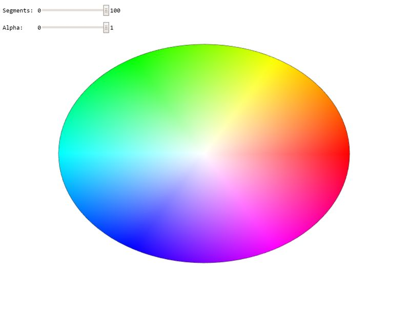

New Jersey Institute of Technology: CS 438
Interactive Computer Graphics
Task 2 (8 points)
Search for TODO_A1 in the JS file to find all tasks in the code!
Circle drawing and color interpolation:
2a: Create a circle geometry which can be rendered using a TRIANGLE_FAN. Use the arguments of the function to specify the radius of the circle and the number of linear segments to approximate it (3 points). Interpolate the color values on the circle linearly using the HUE of the HSV color-space (use function hsvToRgb(.,.,.)) (2 points).
2b: Adapt the rendering function to render the circle geometry using a TRIANGLE_FAN. Use the same geometry to render a black outline of the circle using a LINE_STRIP. Take care of proper management of the attributes using gl.enableVertexAttribArray(colorAttribLocation) and gl.disableVertexAttribArray(colorAttribLocation); (2 points). Your result should look like on the image below.
2c: Why is the displayed circle not round? Explain in the documentation below (1 point).
WebGL Canvas
Documentation
Please write a short report here. It should list what you have implemented, as well as a brief discussion and your conclusions. Also add as many comments in your code as possible---it will help us in judging your work.
Good Luck!
Instructor: Assoc. Prof. Dr. Przemyslaw Musialski
Email: przemyslaw.musialski@njit.edu